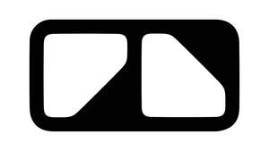

Trade Mark Journal No.2026/006 6 February 2026
UK00004300010 24 November 2025 (14,16,18,20,21,22,24,25)

International priority date claimed: 30 May 2025
(Jamaica)
(94978)
- Class 14
- Precious metals and their alloys; jewellery; bracelets; precious stones; semi-precious stones; cuff links; tie pins of precious metal; tie clips of precious metal; jewels; trinkets [jewellery]; trinkets of precious metal; trinkets coated with precious metal; decorative articles [trinkets or jewellery] for personal use; horological and chronometric instruments; watches; watch straps; clocks; key fobs; silver key fobs; key fobs in precious metals or coated therewith; key rings of precious metal; key fobs made of leather or leather imitations; key rings and key chains; key rings of precious metals; jewellery boxes; lapel pins; charms [jewellery]; charms for key rings and key chains.
- Class 16
- Printed matter; stationery; posters; maps; travel guides; books; colouring books; children’s books; children’s activity books, story books; cookery books; newspapers, periodicals, magazines; comics; catalogues; newsletters; tickets; souvenir programmes; manuals; printed instructional, educational and teaching materials; photographs; brochures; paper banners; paper flags; bunting of paper; stencils; office requisites (other than furniture); writing and drawing instruments; paper; calendars; stickers; labels; decalcomanias; sticker albums; sticker books; adhesives for stationery or household use; drawing materials and materials for artists; paintbrushes; plastic sheets, films and bags for wrapping and packaging; gift wrap, greeting cards, gift tags, gift ribbon made from paper; tissue paper; party invitations; thank you cards; place setting cards; wedding albums; photograph albums; postage stamps; stamp albums; stamp mounts; commemorative stamp sheets; scrapbooks; memento books; boxes of card or cardboard; rulers; postcards; bookmarks; bookends; erasers; paperweights; book covers; diaries; wall planners; year planners; notebooks; appointment books; address books; business card holders; cheque book covers; passport covers; folders; notepads; art prints; pens; pencils; presentation packs and folders; pencil cases; figurines designed to sit on top of pens; chalk boards; chalk; whiteboards; staplers; staples; hole punches; sticky tape; sticky tape dispensers; paper clips; colouring materials, crayons, artists materials; modelling clay; children’s painting sets; stamps for ink and ink pads; highlighter pens; paper towels, napkins, serviettes, mats, coasters, handkerchiefs, tissues, cloths, wipes, tablecloths, party favours, all made wholly or principally of paper and/or paper derivatives; babies bibs of paper; paper cake cases; wrapping and packing paper; paper bags and sacks; disposable paper protectors for carpets and seats; disposable protectors for steering wheels and road wheels, all made of polythene or of plastic film or sheet materials; money clips; desk sets; desktop organisers; spare parts lists; maintenance manuals and advertising materials, all being printed publications; dressmaking patterns; luggage tags of paper or card.
- Class 18
- Leather; imitation leather; imitation suede leather; leather and imitation leather bags; pouches of leather for packaging; cases of leather for holding keys; leather leashes; traveling bags; vanity cases sold empty; attaché cases; document cases; suitcases; bags; wallets; purses; handbags; backpacks; rucksacks; travel bags; key bags; business card cases; card holders; cosmetic bags; shoulder bags; waist bags; luggage; luggage tags; sports bags; tote bags; parasols; umbrellas; walking sticks; umbrella sticks; hiking poles; animal leads; collars, leashes and clothing for animals; animal skins and hides; whips; harnesses and saddlery.
- Class 20
- Furniture; cushions, bean bag cushions, yoga cushions and bolsters; mirrors; picture frames; name plates, banners of plastics material and placards, wall plaques; figurines of resin or plastics material; basket ware; locks, keys, badges, non-metal decorative emblems, plastic identification signs, and nameplates; baskets, bins, racks, racking and display stands for storage or display and containers; screws, nuts, bolts, washers, fasteners, and fixings; all made wholly or principally of plastics and/or wood; storage and display furniture; showroom and reception furniture; shelves, shelving and display stands; display units, racks and racking, all in the nature of furniture; parts and fittings, all for dispensers, storage and display furniture, racks, racking, stands, display units, shelves, shelving, containers and platforms; clothes hangers and mannequins; furniture for camping, camp chairs; sleeping bags for camping, sleeping mats; pet cushions; dog kennels; pet houses or cages; mooring buoys (non-metallic); picnic tables; work tops; displays, stands and signage (non-metal); advertisement display boards; advertising balloons; racing number plates; containers, not of metal, for storage or transport; unworked or semi-worked bone, horn, whalebone or mother-of-pearl; shells; meerschaum; yellow amber; gun racks.
- Class 21
- Household or kitchen utensils and containers; Cookware and tableware, except forks, knives and spoons; drinking cups; Combs and sponges; Brushes, except paintbrushes; Brush-making materials; Articles for cleaning purposes; Unworked or semi-worked glass, except building glass; Glassware, porcelain and earthenware; Camping grills, camping cookware, camping dishware; lunchboxes; crockery, mugs, plates, tankards, napkin holders and rings, trays, mats, bottle openers; corkscrews, coasters, ornaments; statuettes; tea pots; egg cups; ice buckets; decanters; wine stoppers; toothbrushes; paper cups, dishes and plates; small domestic utensils and containers; salt and pepper mills; cookie cutters; ice cube moulds; cake moulds; cloths and sponges; clothing and footwear brushes; articles and materials for cleaning purposes; car-cleaning cloths, sponges and brushes; portable coolers and flasks, plastic water bottles, all for foodstuffs and/or beverages; Plastic water bottles for bicycles; small portable containers for money and/or personal possessions; money boxes; piggy banks; cookie jars; pet bowls; pet drinking vessels; pet feeding vessels; feeding tables for birds.
- Class 22
- Ropes and string; nets; tents and tarpaulins; awnings of textile or synthetic materials; sails; sacks for the transport and storage of materials in bulk; padding, cushioning and stuffing materials, except of paper, cardboard, rubber or plastics; raw fibrous textile materials and substitutes therefor; covers for vehicles; towropes; tow straps; ratchet tie-down straps; quick release tie down straps; lashing straps; tarp straps; fishing nets, hammocks, rope ladders; packaging bags of textile.
- Class 24
- Textiles and substitutes for textiles; Household linen; Curtains of textile or plastic; textile fabric for vehicle upholstery; travelling rugs; bed covers; bedspreads, bed clothes and bed linen; blankets; table covers and table linen; mats and towels of textile materials; textile piece goods; camping linens, blankets for outdoor use; towels.
- Class 25
- Clothing; footwear; headgear; outerwear; leisurewear; t-shirts; tops; polo shirts; sweatshirts; hooded tops; hooded pullovers; shirts; fleece pullovers; fleece jackets; sweaters; suits; coats; dresses; skirts; jackets; vests; blazers; gilets; anoraks; sweatpants; trousers; shorts; eye masks; gym wear; cycling shorts; cycling tops; specialised sports clothing; overalls; coveralls; racing driver overalls; uniforms; smocks; underclothing; pyjamas; sleep masks; pocket squares; swimwear; scarves; bandanas; sashes for wear; hosiery; socks; stockings; cloth bibs; costumes; fancy dress costumes; aprons; belts; gloves; mittens; driving gloves; cycling gloves; ties; hats; caps; head scarves; head wraps; headbands; visors; ear muffs; knitted beanies; shoes; boots; slippers; drivers shoes; sandals; cycling shoes; children’s clothes; babies clothes; sports teams club shirts; sports teams scarves; sports teams training kit [clothing]; sports teams replica clothing kit; sports teams supporters clothing, headgear and footwear; ski boots; snowboard boots; apres-ski boots; triathlon clothing; running spikes; football boots; walking boots; mountaineering boots; climbing boots.
Jaguar Land Rover Limited
Representative: CMS Cameron McKenna Nabarro Olswang LLP